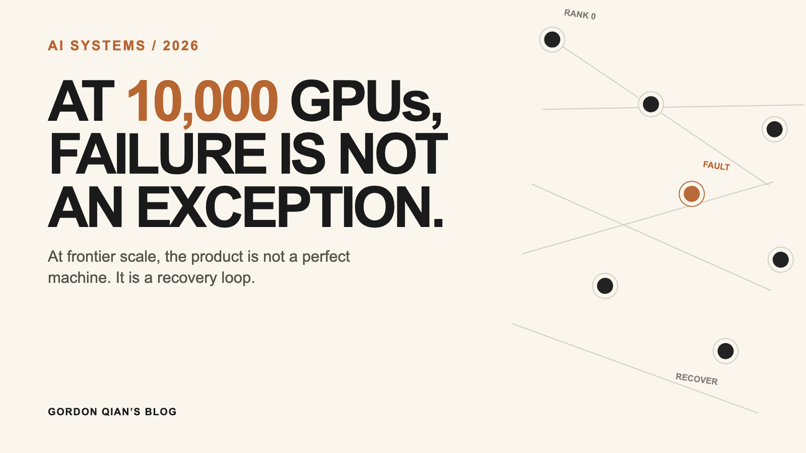

AI Systems
万卡训练平均三小时就有一次硬件错误，怎么解决的？
答案不是永不故障，而是发现、隔离、补机、恢复、验证的闭环要足够快。

先看图：四类问题，四条处理线
慢节点
信号 同一并行组反复比中位数慢
频率 每步/每次通信；遥测每 5 秒；连续 3 步隔离
动作 排查计算、通信或数据读取；隔离卡、链路或数据源
防线 温度/时钟/NVLink/网卡遥测
硬故障
信号 GPU 异常事件编号（XID）、错误纠正码（ECC）错误、掉卡、NCCL 超时
频率 XID/ECC 即时上报；遥测秒级到分钟级
动作 隔离节点 → 备用节点池补健康 GPU → 检查点恢复
防线 可靠性遥测（RAS）+ 数据中心 GPU 管理器（DCGM）；异常触发定向微基准
恢复太慢
信号 分片读取、成员重组或通信组建立太慢
频率 每 K 步或每 T 分钟存一次；故障立即恢复
动作 只读本节点分片；共享状态一次读取后广播
防线 异步分片检查点：训练流快照，后台落盘；元设备初始化（meta initialization）+ 分片检查点加载；预留备用容量
静默数据损坏（SDC）
信号 非数值（NaN）；张量/矩阵乘（GEMM）重算不一致；数据并行聚合前梯度摘要持续离群
频率 NaN 每微批；梯度每步；重算按 K 步抽样或异常触发
动作 保留现场，重放、二分、隔离、回滚
防线 机群扫描（Fleetscanner）、在线搭载测试（Ripple）、硬件哨兵（Hardware Sentinel）；影子节点池、梯度摘要
1. 慢节点（Straggler）：一张慢卡拖住所有人
- 发现（每个训练步、每次集合通信）：记录耗时；只和相同并行组的中位数比。
- 定位（每次慢节点判定后立即开始）：看时间花在计算、通信还是数据读取。温度、降频、PCIe 重传（replay）、NVLink 循环冗余校验（CRC）、网卡（NIC）计数器每 5 秒采样一次；5 秒是常用配置，可按集群调整。
- 处理（连续 3 个训练步离群时）：隔离（fence）：把节点从作业中摘掉、停止调度；调度器随即从备用节点池补位，不等它真的掉线。
最小策略（伪代码）：
slow_streak = slow_streak + 1 if step_ms > 1.3 * peer_median else 0
if slow_streak >= 3:
scheduler.fence(node) # 停止调度到该节点
scheduler.replace(node, spare_pool) # 用备用节点补位2. 硬故障：先隔离，再换机恢复
- 触发：GPU/HBM 不可纠正错误、设备消失、心跳丢失、NCCL 超时。
- 持续体检：可靠性、可用性与可维护性（RAS）遥测记录硬件/固件的错误状态；数据中心 GPU 管理器（Data Center GPU Manager, DCGM）持续采集 GPU 异常事件编号（XID）、错误纠正码（ECC）计数、温度、功耗和时钟等指标。XID/ECC 等驱动事件即时上报；温度、功耗、时钟按监控周期轮询，常见是秒级到分钟级，具体由集群配置决定。达到规则阈值就标记节点可疑，触发隔离。
- 动作：停止给可疑节点排作业，从备用节点池（spare pool）补入健康 GPU；重建通信组，再从检查点（checkpoint）恢复。
- 确认：异常触发后运行定向诊断微基准（directed diagnostic microbenchmark）：对可疑机器跑答案已知的 GEMM、HBM、PCIe/NVLink、NCCL 测试，区分卡、线缆、路由和软件；它不放在每个训练步上。
最小策略（伪代码）：
health = dcgm.poll(node) # XID、ECC、温度等遥测
if health.has_uncorrectable_error():
scheduler.fence(node)
restart_from(latest_checkpoint, spare_pool.take())3. 恢复：检查点、加载和通信组都要快
- 检查点要存：模型、优化器（optimizer）、数据位置、采样器（sampler）和随机数状态。
- 频率：每 K 个优化器步或每 T 分钟创建一次；没有全行业固定值。K/T 由中断频率、检查点耗时和存储带宽共同决定；故障发生后只会丢失最近一个间隔的进度。
- 怎么存：采用分片异步检查点（asynchronous sharded checkpoint）。假设模型和优化器已经用 FSDP/DTensor 切分：每个进程只持有、也只写自己的本地分片；所有进程共同提交一个可恢复版本。
- 安全点是什么：在一次参数更新完成后，所有进程处于同一个训练步。此时先把各自 GPU 分片复制为不可变的暂存副本；训练随后可以继续改原始参数，后台只写这份副本。
- 后台在做什么：后台工作进程等待快照复制完成，再把已固定的分片从暂存缓冲区写到本地 NVMe 或远端存储。全部分片写完后才原子提交一个元数据清单；半截写失败的检查点不会被当作可恢复版本。
- 代价：它不阻塞主训练流，但不是零开销：快照复制和带宽仍会占资源，因此要用独立传输流、限速和足够的暂存缓冲来控制影响。
- 恢复要快：只在首次启动、故障恢复或成员重组时发生：每个进程（rank）只加载自己的分片（shard）；同一份共享状态只由一个工作进程（worker）读取，再广播。
- 元设备初始化（meta initialization）：只在首次加载、恢复或加载预训练权重时运行，不在训练步中运行。这是加载路径的优化，不改变保存格式：先建没有权重字节的模型骨架，再把正确分片直接流入目标进程，避免完整模型的无用初始化和双份内存。
异步分片检查点的最小代码：所有进程都执行；分片由分布式检查点库识别并分别写出。
import torch.distributed.checkpoint as dcp
state = {"model": fsdp_model, "optimizer": optimizer, "step": step}
future = dcp.async_save(state, checkpoint_id=f"/ckpt/{step}") # ① 先暂存，再后台写入
train_one_step() # ② 原训练继续跑
future.result() # ③ 下次轮换/删除前，确认这版真的写完真正关键：async_save 先做“训练安全”的暂存副本；否则训练更新会一边改参数、后台一边把新旧数据混着写。暂存完成后，序列化和写本地 NVMe/远端存储才交给后台线程或进程。
元设备初始化的最小代码：先有形状、分片布局和空存储，再把当前 GPU 需要的参数数值填入，加速检查点加载。
# Meta 模型骨架初始化策略：只建形状，不分配权重
with torch.device("meta"):
model = Transformer(cfg) # 只有形状，没有权重字节
model = shard_for_this_rank(model) # 伪代码：先按 FSDP/DTensor 布局分片
model.to_empty(device=f"cuda:{local_rank}") # 只分配本进程分片的空存储
dcp.load({"model": model}, checkpoint_id=ckpt_dir) # 检查点只填本进程分片4. 静默数据损坏（SDC）：算错了，却没有报错
- 非数值（NaN）：损失每个微批检查；梯度范数与混合精度溢出标志每个优化器步检查。若使用梯度累积，后两项就是每 N 个微批检查一次。发现后跳过本次参数更新或停止训练，提高检查点频率，重放并二分缩小可疑机器。
- 有限但错误的梯度：通常每个训练步、在数据并行聚合（all-reduce）之前上报范数（norm）、均方根（RMS）、最大值（max）等少量摘要；持续离群才升级排查。预算紧张时可改为每 N 步或抽样张量。
- 为什么不明显拖慢：摘要在独立 CUDA 流（CUDA stream）中计算，训练进程只把几个标量异步复制到固定页内存（pinned memory）；后台监控进程等 CUDA 事件（CUDA event）完成后再聚合、比对。主训练流不等监控结果，通常只落后 1–数个训练步。
- 但不是所有事都能异步：NaN/溢出必须在参数更新前拦住；各进程会用一个很小的标志同步决定是否跳过更新。影子重算和定向诊断只在异常触发后运行，避免把重活放到每一步。
- 最强验证：影子节点池（shadow pool）从同一检查点、用同一批数据（batch）重算抽样训练步。频率通常是每 K 个优化器步随机抽一次，或在异常后升级触发，不会每步重算。结果不同，就调查在线训练组（live）与影子组；不能直接认定谁错。
- 机群扫描（Fleetscanner）：在固件升级、维修等维护窗口，对主机跑定向微基准；覆盖全机群约需 45–60 天。它用已知答案主动找缺陷，也把测试得到的异常特征沉淀为遥测信号。
- 在线搭载测试（Ripple）：与正常工作负载共置，在核心和线程间穿插毫秒到秒级的定向测试；因此可在数天内覆盖机群，比 Fleetscanner 更快，但测试强度受在线负载约束。
- 硬件哨兵（Hardware Sentinel）：不申请测试资源，也不重算矩阵乘。每次内核异常都会被收集和关联，按 CPU 核心聚合异常模式；某核心反复异常，就把它标为疑似 SDC 根因。这是统计性定位，不是对某一次 GPU 矩阵乘（GEMM）结果的正确性证明。
旁路监控（伪代码）：
summary = grad_summary(local_grads) # 范数、RMS、最大值；在 GPU 上算
monitor.enqueue_after_cuda_event(summary) # 异步复制少量标量给后台
dist.all_reduce(local_grads) # 训练不等监控结果
# 连续离群时：安排影子重算和定向诊断一句话
万卡训练靠的不是不出故障，而是故障发现得早、影响圈得小、恢复得快、错误不悄悄积累。
资料来源
- Meta, The Llama 3 Herd of Models
- Meta Engineering, How Meta keeps its AI hardware reliable
- MegaScale
- PyTorch Elastic、Distributed Checkpoint、meta device
喜欢这篇文章？发到自己邮箱，稍后阅读。